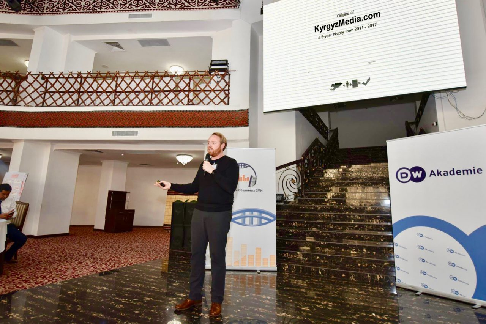
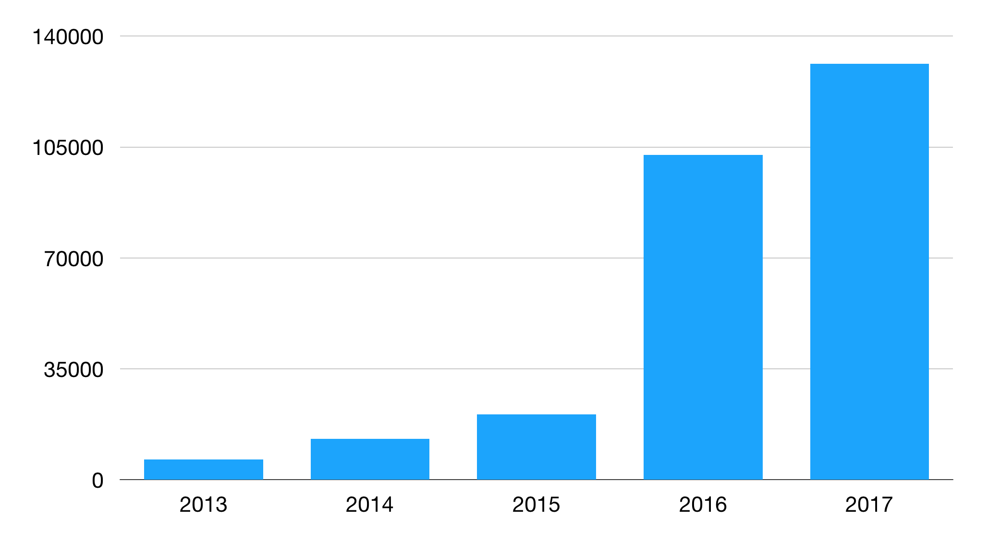
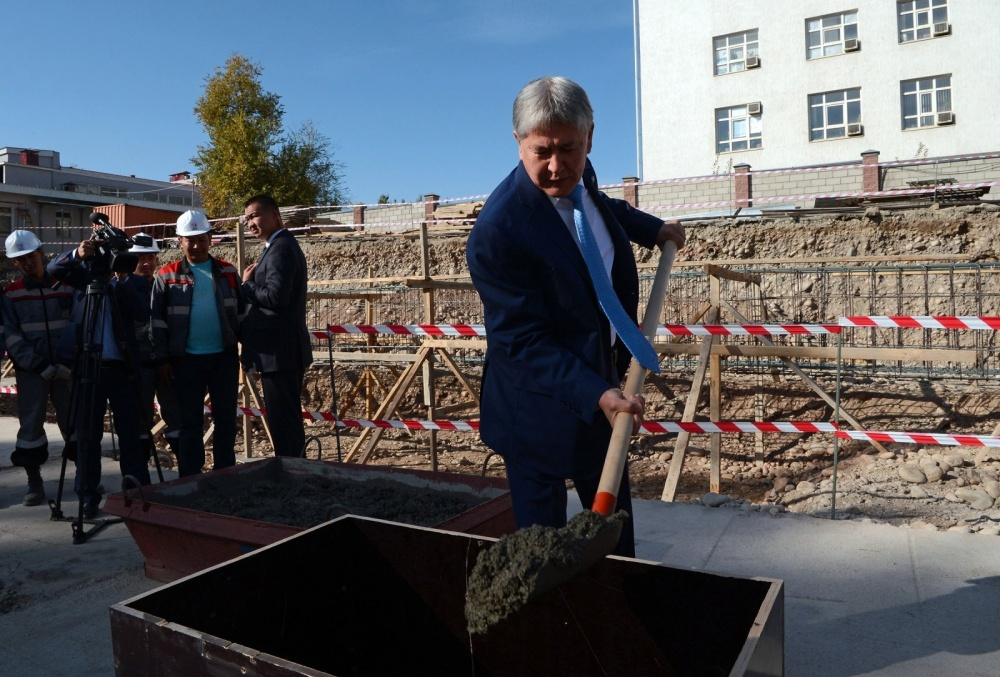
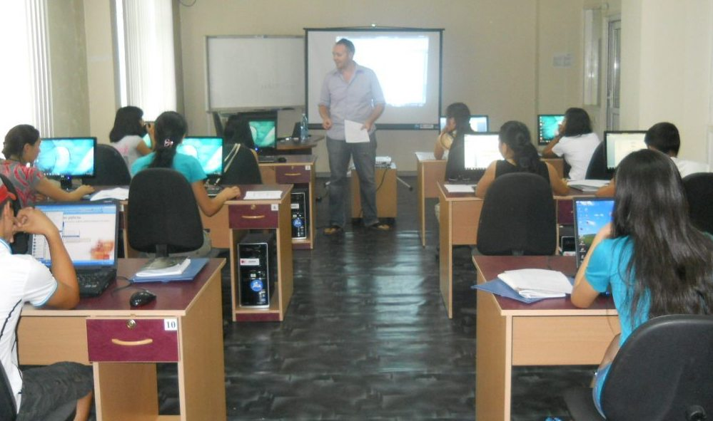

I just returned from a 2-week trip to Kyrgyzstan. “Kyrgyz-what???” you say? Exactly. Well, if you have been paying attention to my writings the last years then you will recall that I served in the US Peace Corps from 2011-2013 in Kyrgyzstan.
Kyrgyzstan is a gorgeous and remote country in the heart of Central Asia. Europeans who visit the country refer to it as the Switzerland of Central Asia. The history of the country is steeped in nomadic traditions, and it was once a major route along the Silk Road.
During my time there, I came to truly love the country and adore its people and culture. I had not been back since the end of my service over 4 years ago, so it was now high-time that I make it back that way.
In the Peace Corps, we don’t really expect that we will ever understand the full breadth or impact of the work we do. This is especially true of the organization’s roots over 50 years ago. Even so, there are well-documented cases of the ripple effect Peace Corps Volunteers have made around the world, sometimes in the most unexpected ways.
While reuniting with friends and colleagues this last week, I learned a few things which I did not know about my own legacy in Kyrgyzstan. Some of these I suspected, while others were a complete shock.
250,000 readers and growing
My initial assignment with the Peace Corps was in the remote western province of Kyrgyzstan called Talas, where I worked with Central Asia’s premier community radio station. I did some basic programming work with them and worked out some best-practices on their blog. Moreover, I worked with them to provide trainings to other up-and-coming community radio stations around Kyrgyzstan.
After a few months of this, I started to get an idea. I observed that many of the eager people we were training in radio broadcast journalism did not have radio stations to return home to, and the prospects of those being built anytime soon seemed quite low.
Additionally, it was obvious that nearly everyone in Kyrgyzstan had a smartphone and was keeping in touch with the news and their friends via phone apps. Therefore, I came up with the idea that we should provide phones and an online platform to these journalists so that they could publish stories today, while they continue to progress toward building a radio station tomorrow.
 Judson delivering the keynote at a media conference in Bishkek in November 2017.
KyrgyzMedia.com was born in 2013 and now reaches more than 120,000 readers each year all around the world. A remarkable achievement for these journalists who all come from rural parts of Kyrgyzstan!
I couldn’t be prouder that this project’s origins are from an idea that I had and fought for, wrote the original project plan for and even secured the first rounds of funding for. However, the success and achievements are, and always have been, with the journalists who are utilizing the technology to tell their story.
Last week, I was afforded the opportunity to present this history and success to the journalists at a media conference in Bishkek, where I was a guest of the conference at the invitation of Deutsche Welle. I am eternally grateful to their support of the project, and of course to the journalists who saw value in this concept and who have owned it ever since.
 Year over year growth in articles read on KyrgyzMedia.com
Improvements in medical facilities
One morning, just before my first departure from Kyrgyzstan in 2013, my appendix decided it was time to leave my body. I had an emergency appendectomy in Kyrgyzstan and it was not a fun experience at all. In fact, it was downright terrible.
As a writer constrained to a hospital bed for a week, I did just what you might expect and documented the whole experience.
In my writing, I strived to compliment the skills and achievement of the medical teams, who were indeed great. However, they had very limited resources to work with. The purpose of my article was more to shine a light on the awful conditions of Kyrgyzstan’s top surgical center in hopes that it might be a contributing factor to future improvements. My article was even translated into Russian and posted on the local news site, Kloop Media.
 Judson recovering in a hospital bed after having an appendectomy in Bishkek.
Judson recovering in a hospital bed after having an appendectomy in Bishkek.
This week, my old doctor shared with me the news that something indeed did happen as a result of my reporting.
The son of a Kyrgyz parliamentarian read the article and showed it to his father, urging that these conditions were a shame and that the country should address them. After all, Kyrgyzstan certainly has the resources to do better. As the English idiom goes, “the squeaky wheel gets the grease,” and it would appear that my article was a pretty loud squeak.
What I have now learned, is that this started a wave on which enough support was gained to make serious improvements to the country’s medical facilities. Just last month, a state of the art oncology center was opened in Bishkek. As for the surgical center where I received treatment, it has also seen a facelift.
I was only dreaming that by sharing my experiences, I could make some impact at all on the Kyrgyz health care system. To learn that now a whole new hospital has been built on the support which my article played a part in forming is one of the most remarkable things I have ever come to know.
 President Almazbek Atambayev of Kyrgyzstan breaks ground on a new medical facility. Photo credit: vb.kg
Students attending university
A brilliant university student named Meerim once asked me to help her with a summer camp for students in the 15-16 year age range. The problem is that the students would be from an area of Kyrgyzstan which was off-limits for me to travel to. As a workaround solution, Meerim packed up all the students and brought them to me, in Bishkek.
Roughly 20 students attended. For my part of the camp, we had two objectives: expose the students to basic computer skills, especially that of using Excel and understanding budgets, and also to expose them to universities in Bishkek. The hope was that we might inspire some of the students to consider applying for university when they finished their primary studies.
The training was lots of fun and the kids grasped all of the concepts just fine. They even seemed to find it all quite interesting. We toured a wide variety of universities ranging from the American university, a Russian university, a design university, and a technical college. We also exposed them to some local entrepreneurs, even gaining a tour of the roasting facility for Central Asia’s finest coffee roaster.
After a week, the camp concluded and everyone went home, where I was never to see the students ever again.
This week, I caught up with Meerim and she informed me that 100% of those students applied to, and are now attending, university! To top it off, they all got scholarships! This outcome was beyond anyone’s wildest hopes and is a testament to what impact anyone can make in the life of another person, especially if you reach them at a young age.
 Judson provides computer training to students in Bishkek.
Friends that are like family
Coming to Bishkek again felt like coming home. As I said earlier, Kyrgyzstan’s geographic beauty is vast, but that wouldn’t matter at all if it weren’t for the people who occupy the space. I adore them all.
At every step, I came to realize that despite my scrappy, unkept, and often dirty appearance as an impoverished Peace Corps Volunteer, that never prevented me from forming relationships with wonderful people, or slowed me down in advancing the goals which I had set for myself.
Kyrgyzstan empowered me to work hard and to strive for a common good. More importantly, the people worked with me to help me understand how I could be of service to them in a valuable way.
This is my story, and so I tell it. But if the legacy is to persevere, it is not because it is mine, but because it is the collectives. None of this could have been done alone and I shy away from taking any amount of credit. I am proud to have been a part of these accomplishments, and I will continue to use my life to serve the community around me. I hope that you will do the same.
First time I departed from Bishkek vs the second time. Great friends all around!
Posted by Judson Moore on Saturday, November 11, 2017
Judson L Moore
Travel addict. Ambitious about making the world a better place. Writing what I learn along the way.